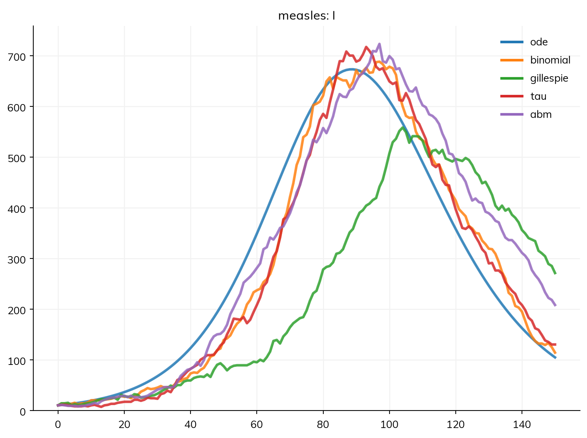
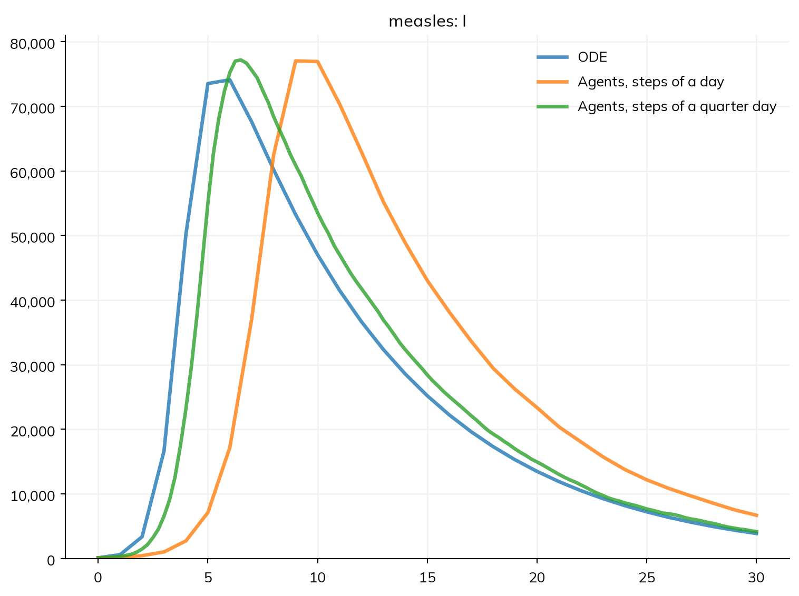

A model in Starsim says what the compartments are, how people move between them, and at what rates. A solver is the method that turns this into numbers over time. The same model can be solved in five ways (an ODE, three kinds of stochastic compartments, and agents), each with a few options, and for most models and questions they give the same answer, so Starsim chooses one for you. This page is about the cases where the choice matters, the compiled code (the backends) that runs each solver, and what each solver supports, approximates, or can’t run (Will my model run as an ODE?). How the solvers work inside is in Engines and transmission.
The solvers
Solver
What it computes
Use it for
'ode'
The expected course of the epidemic, as a set of ordinary differential equations: compartments hold fractions of people, and the result is the same on every run
Large populations, comparing scenarios on average, fitting to data, gradients
'binomial'
Whole people moving between compartments at random, a step at a time (a chain-binomial model)
Simple stochastic runs, and models written in discrete time, such as chain-binomial models from the literature (with substeps=1)
'gillespie'
Whole people moving one at a time, at random times (Gillespie’s exact stochastic simulation algorithm)
Small populations, and the chance that an outbreak takes off or dies out (with many runs)
'tau'
As Gillespie, but taking many events at once (tau-leaping), which is close to exact and much faster when there are many events
Large stochastic runs
'abm'
Individual agents, each with their own state, age, and contacts
Networks, contact tracing, differences between individuals, histories (who infected whom, time since infection); chosen for you when the model needs them
The name is the solver with its defaults: solver='ode' is the same as solver=ss.solvers.ode(). Three of them have options, given with the solver itself, so an option can’t be given to a solver that would ignore it:
Solver
Options
Example
ss.solvers.ode()
integrator= ('rk4', the default, or 'euler'), substeps= (default: enough for accuracy), dwells= ('stages', the default, or 'exact': each dwell time as it is rather than as Erlang stages, an integro-differential model, for dwell times far from exponential and renewal-equation models; see Branching and rescaling)
substeps= (default: enough that at most about a tenth of a compartment leaves in one; 1 takes each step whole, as a model written in discrete time does)
solver=ss.solvers.binomial(substeps=1)
ss.solvers.abm()
step=: 'midstep' (the default: those who arrive in a state during a step face its rates for the rest of it, closest to the compartmental solvers), 'wholestep' (rates over whole steps only, as code with ss.bernoulli() takes them: faster, a little less exact when rate × dt is large), or 'events' (event by event within each step, a prototype, for networks where events are fast against a step)
solver=ss.solvers.abm(step='events')
A declared module can also set its own way of running as agents (ss.Disease(..., solver=ss.solvers.abm(step='events'))). Once the sim is initialized, sim.solver is the solver that runs, with its options, and sim.describe() says how each module runs, and why.
The first four are compartmental: they only know how many people are in each compartment (or group, if the model is stratified). Agents know who each person is. Any of them, except agents by events, can also run the model as a branching process, with depletion turned off (branching=True; see Branching and rescaling). The settings that only agents take (rescale=, even_draws=, and n_agents= without total_pop=) are errors for a compartmental run, rather than ignored.
How Starsim chooses
By default (solver='auto'), a model runs as an ODE if every part of it can be written as compartments, and as agents if anything in it needs individuals: a contact network, n_agents=, or a module written as code that keeps a value for each person. 'auto' never chooses a stochastic compartmental solver; ask for one by name.
Here is a measles outbreak in a town of 100,000 people. Measles has a basic reproduction number R0 of about 15 (β = 1.9 per day, infectious for 8 days), but in this town 90% of people are already immune, so at the start each case infects about 15 × 0.1 = 1.5 others:
import starsim as ssS, I, R = ss.states('S I R')infection = S >> I @1.9*I # β = 1.9 per dayrecovery = I >> R @ ss.days(8) # Infectious for 8 days on averagemeasles = ss.Disease(infection, recovery, init=dict(R=0.9), init_n=dict(I=10)) # 90% immune, 10 infectioussim = ss.Sim(measles, total_pop=100_000, stop=ss.days(150))sim.run();
Sim: measles, 100,000 people, as an ODE, days 0 to 150
measles: R0 = 15.2 (R = 1.52 at the start, with 10% susceptible), with 10 infectious at the start
Done in 0.0034 s; measles: 5,789 infections; at most 673 infectious, on day 89
library(starsim)states("S I R")measles <-Disease(infection =Transition(S, I, rate =1.9* I), # β = 1.9 per dayrecovery =Transition(I, R, dur =days(8)), # Infectious for 8 days on averageinit =list(R =0.9), # 90% immuneinit_n =list(I =10) # 10 infectious)sim <-Sim(measles, total_pop =100000, stop =days(150))sim$run()
The first line of the output says what ran and how: here, as an ODE. sim.describe() shows the same choice and the reason for it, before anything runs. To use another solver, give solver= to the sim, or to sim.new():
sim = ss.Sim(measles, total_pop=100_000, stop=ss.days(150), solver='gillespie')sim = sim.new(solver='abm').run() # Runs the same sim again, as agents
The same outbreak five ways
For a large population and a model with nothing individual in it, the solvers agree. Here is the outbreak above with each one, run side by side with ss.parallel(), which takes a dict of sims by label:
sims = {}for solver in ['ode', 'binomial', 'gillespie', 'tau', 'abm']: sims[solver] = ss.Sim(measles, total_pop=100_000, stop=ss.days(150), solver=solver)sims['abm'] = sims['abm'].new(n_agents=100_000) # One agent per person: see belowmsim = ss.parallel(sims)msim.plot('measles.I')
MultiSim: 5 runs of 5 scenarios (ode, binomial, gillespie, tau, abm)
Done in 0.72 s

sims <-list()for (solver inc("ode", "binomial", "gillespie", "tau", "abm")) { sims[[solver]] <-Sim(measles, total_pop =100000, stop =days(150), solver = solver)}sims$abm <- sims$abm$new(n_agents =100000) # One agent per person: see belowmsim <-parallel(sims)msim$plot("measles.I")
The agents are given n_agents=100_000, one per person: with the default of 10,000 agents, the 10 infectious people at the start would be a single agent (see Branching and rescaling). The total infections and final states of each:
msim.summarize()
value
result
scenario
measles_S
ode
4,209
binomial
4,313
gillespie
5,145
tau
4,357
abm
4,444
measles_I
ode
105
binomial
114
gillespie
271
tau
130
abm
208
measles_R
ode
95,686
binomial
95,573
gillespie
94,584
tau
95,513
abm
95,348
measles_infection
ode
5,789
binomial
5,686
gillespie
4,877
tau
5,641
abm
5,561
measles_recovery
ode
5,699
binomial
5,586
gillespie
4,619
tau
5,529
abm
5,362
measles_infected
ode
105
binomial
114
gillespie
271
tau
130
abm
208
measles_prevalence
ode
0.00302
binomial
0.00293
gillespie
0.00238
tau
0.00289
abm
0.0032
alive
ode
100,000
binomial
100,000
gillespie
100,000
tau
100,000
abm
100,000
died
ode
0
binomial
0
gillespie
0
tau
0
abm
0
emigrated
ode
0
binomial
0
gillespie
0
tau
0
abm
0
female
abm
49,922
Each stochastic run is one draw from many possible outbreaks, so to compare solvers properly, run the stochastic ones many times (see Scenarios).
When they disagree
Whether an outbreak takes off
The ODE follows fractions of people, so an outbreak that starts with one infectious person always takes off if R > 1. In reality, that person may recover before infecting anyone, or the first few chains of transmission may end by chance. With one infectious person at the start, the ODE says what it cannot show:
Sim: measles, 100,000 people, as an ODE, days 0 to 150
measles: R0 = 15.2 (R = 1.52 at the start, with 10% susceptible), with 1 infectious at the start
Note: "measles" starts with 1 infected, so whether it takes off is a matter of chance, which solver="ode" does not show; solver="gillespie" with ss.parallel(n_runs=...) does
Done in 0.0023 s; measles: 5,068 infections; at most 667 infectious, on day 124
The note suggests running it many times with a stochastic solver. Here are 200 runs with Gillespie’s algorithm, each plotted (lines=True):
Most runs show nothing: the outbreak died out. Counting them:
totals = msim.results.measles.infection.summarize() # The total infections of each runprint('Runs that died out:', sum(totals <100), 'of', len(totals))
Runs that died out: 140 of 200
So for the chance that an imported case starts an outbreak, or the uncertainty in when it peaks, use a stochastic solver and many runs; the ODE says how large and when, on average, if it takes off.
Fade-out between epidemics
Over longer periods, the ODE can carry an infection through a trough in which fewer than one person is infectious, after which it grows again. A stochastic model can’t: when the last infectious person recovers, the infection is gone until it is introduced again. Here is the same town over 20 years, with births and deaths bringing in new susceptible children (β is typed, ss.perday(1.9), to be clear beside the annual demographics; Time says how bare numbers are read):
S, I, R = ss.states('S I R')infection = S >> I @ ss.perday(1.9)*Irecovery = I >> R @ ss.days(8)measles = ss.Disease(infection, recovery, init=dict(R=0.9), init_n=dict(I=10))demographics = [ss.birth(rate=ss.peryear(0.02)), ss.death(rate=ss.peryear(0.02))]town = ss.Sim(measles, demographics=demographics, total_pop=100_000, start='2000-01-01', stop='2020-01-01', dt=ss.weeks(1))town.run()town.plot('measles')
Sim: measles, 100,000 people, as an ODE, 2000-01-01 to 2019-12-28 (the last whole step before 2020-01-01)
measles: R0 = 15.2 (R = 1.52 at the start, with 10% susceptible), with 10 infectious at the start
Note: the number infected in "measles" falls to 0.82 (at 2000-09-23) and then rises to 427; a stochastic run would usually die out there. solver="gillespie" with ss.parallel(n_runs=...) shows how often, in the runs of msim.results.measles.I after that point
Done in 0.0073 s; measles: 40,684 infections; at most 783 infectious, on 2000-03-25
median 6,705
low 6,564
high 6,975
mean 6,735
std 150
Name: measles_infection, dtype: float64
In the stochastic runs, measles dies out after the first epidemic. Where fade-out matters, use a stochastic solver, or add introductions from outside (see Mixing).
The length of a step
The ODE takes as many small steps inside each time step as it needs, Gillespie and tau-leaping work in continuous time, and the chain binomial by default splits each step into enough substeps that at most about a tenth of a compartment leaves in one. So for these, the step adds little error to the disease’s own dynamics. It still matters, though: it is when results are recorded, when modules written as code (interventions, analyzers, networks) act and see each other’s changes, and when values that change over time (ss.timeseries(), ss.seasonal()) are looked up, once a step, at its middle. Agents, and the chain binomial with ss.solvers.binomial(substeps=1), take infection a step at a time: the chance of being infected is worked out once a step (as agents, after the step’s other transitions: see within a step), so someone infected during a step can’t infect anyone until the next one. When rates are fast compared with the step, this slows the epidemic down.
Measles in a town with no immunity is such a case: with β = 1.9 per day, the number infected can double in less than half a day. Here it is as an ODE, and as agents with steps of one day and of a quarter of a day:
S, I, R = ss.states('S I R')infection = S >> I @1.9*Irecovery = I >> R @ ss.days(8)measles = ss.Disease(infection, recovery, init_prev=0.001)ode = ss.Sim(measles, total_pop=100_000, stop=ss.days(30), label='ODE').run()daily = ss.Sim(measles, total_pop=100_000, stop=ss.days(30), solver='abm', label='Agents, steps of a day').run()quarter = ss.Sim(measles, total_pop=100_000, stop=ss.days(30), solver='abm', dt=ss.days(0.25), label='Agents, steps of a quarter day').run()
Sim "ODE": measles, 100,000 people, as an ODE, days 0 to 30
measles: R0 = 15.2, with 100 infectious at the start
Done in 0.0024 s; measles: 99,900 infections; at most 74,112 infectious, on day 6
Sim "Agents, steps of a day": measles, as 10,000 agents, each 10 people, days 0 to 30
Note: consider a shorter step (e.g. dt=ss.days(0.25)): each step is 1 day, and infection transmits at up to 1.9 per day (with everyone infectious), 85% in a step (and I is fast too). Taking whole steps, agents may differ from the ODE by an amount of that order; sim.check_dt() shows how much it matters
Done in 0.043 s; measles: 99,900 infections; at most 77,040 infectious, on day 9
Sim "Agents, steps of a quarter day": measles, as 10,000 agents, each 10 people, days 0 to 30
Note: consider a shorter step (e.g. dt=ss.days(0.062)): each step is 0.25 days, and infection transmits at up to 1.9 per day (with everyone infectious), 38% in a step. Taking whole steps, agents may differ from the ODE by an amount of that order; sim.check_dt() shows how much it matters
Done in 0.12 s; measles: 99,900 infections; at most 77,190 infectious, on day 6.5
MultiSim: 3 runs of 3 scenarios (ODE, Agents, steps of a day, Agents, steps of a quarter day)
Done in 0.36 s

The agents’ run notes the size of the step, and sim.check_dt() runs the sim again with half the step and shows how much each result changes:
daily.check_dt()
Change in each result when the timestep goes from 1 to 0.5 days (largest difference, as a fraction of the largest value):
measles.infection 60.8% (peak 29030 → 31540)
measles.recovery 56.1% (peak 8570 → 8830)
measles.prevalence 43.2% (peak 0.7704 → 0.769)
measles.I 43.2% (peak 77040 → 76900)
measles.infected 43.2% (peak 77040 → 76900)
measles.S 38.5% (peak 99900 → 99900)
measles.R 15.6% (peak 93310 → 94520)
A result that changes by more than a few percent when the step is halved depends on the step, and the step should be smaller. Measles is extreme: for rates of a few percent per step (most models with daily steps and durations of weeks), the step makes little difference. See Time for how to set the step.
Contacts between particular people
A compartmental model assumes that everyone in a group mixes with everyone else in it at random. A contact network, in which each person has a few fixed contacts, breaks this: once someone’s contacts are infected or immune, they have nobody left to infect, so the epidemic grows more slowly and infects fewer people than random mixing at the same number of contacts. Only agents run a network as written; a compartmental solver asked for by name approximates it with random mixing at the network’s mean number of contacts (or, for partnerships, a partner-change model), and notes that it has done so.
Here is a less transmissible infection than measles, with β = 0.05 per contact per day and eight contacts each that never change (dynamic=False):
S, I, R = ss.states('S I R')flu = ss.Disease(S >> I @0.05*I, I >> R @ ss.days(8), init_prev=0.001, name='flu')contacts = ss.RandomNet(n_contacts=8, dynamic=False)agents = ss.Sim(flu, networks=contacts, n_agents=10_000, stop=ss.days(150), dt=ss.days(0.5)).run()mixing = ss.Sim(flu, networks=contacts, total_pop=10_000, stop=ss.days(150), solver='ode').run()
Sim: flu, as 10,000 agents, days 0 to 150
Running as agents: n_agents was given
Done in 0.36 s; flu: 8,713 infections; at most 2,405 infectious, on day 38.5
Sim: flu, 10,000 people, as an ODE, days 0 to 150
flu: R0 = 3.2, with 10 infectious at the start
Note: RandomNet approximated by homogeneous mixing with 8 contacts per day (its mean number of contacts)
Done in 0.0016 s; flu: 9,516 infections; at most 3,241 infectious, on day 28
If the structure of contacts is part of the question (partnerships, households, contact tracing), use agents; if only the average number of contacts matters, compartments are enough. approximations='error' makes any such approximation an error instead of a note.
Speed and backends
The compartmental solvers don’t slow down with the size of the population, except Gillespie, which takes one event at a time: an ODE of all 8 billion people on Earth runs faster than the same model as three agents. Does this mean compartmental models are better than agent-based ones? If all you want is a simple SIR model, then … the answer is probably yes! A million people, as a chain binomial, tau-leaping, and Gillespie:
for solver in ['binomial', 'tau', 'gillespie']: ss.Sim(measles, total_pop=1_000_000, stop=ss.days(50), solver=solver).run()
Sim: measles, 1,000,000 people, as a stochastic compartmental model (chain binomial), days 0 to 50
measles: R0 = 15.2, with 1,000 infectious at the start
Done in 0.0036 s; measles: 999,000 infections; at most 754,758 infectious, on day 7
Sim: measles, 1,000,000 people, as a stochastic compartmental model (tau-leaping), days 0 to 50
measles: R0 = 15.2, with 1,000 infectious at the start
Done in 0.0029 s; measles: 999,000 infections; at most 758,106 infectious, on day 6
Sim: measles, 1,000,000 people, as a stochastic compartmental model (Gillespie), days 0 to 50
measles: R0 = 15.2, with 1,000 infectious at the start
Done in 0.17 s; measles: 999,000 infections; at most 741,375 infectious, on day 6
With tens of millions of events, use tau-leaping rather than Gillespie. Agents take time in proportion to the number of agents and the number of steps; each agent can stand for several people (see Branching and rescaling), and Speed and scale covers finding what slows a run down.
Whichever solver is chosen, the numbers are worked out by compiled code, which Starsim chooses itself; the choice never changes the results. The kernels are compiled loops that run compartmental models, the passes over the agents, and the random draws. There are two copies that give the same numbers bit for bit, and ss.options.kernels (or the environment variable STARSIM_KERNELS) chooses between them:
ss.options.kernels
What it is
Use it for
'auto' (default)
Rust where it is installed, otherwise Numba, with short compartmental runs taken as plain Python until Numba has compiled
Every model: there is rarely a reason to change it
'rust'
Kernels in Rust, compiled ahead of time and included in the wheels that pip install starsim gets (from a clone, build them with cd starsim/solvers/rust && ./build)
No compiling on the first run: notebooks, dashboards, and clusters where many tasks start at once
'numba'
Kernels in Numba, compiled on first use (a few minutes, once per install, then kept on disk)
An install from source without Rust, and comparing with Rust’s, since Numba’s are the reference
'python'
The compartmental kernels as plain Python (the passes over agents are still compiled)
Stepping through a compartmental run in a debugger; it is slow
If the first run after installing is slow, Numba is compiling. ss.compile() (or starsim init compile) does it ahead of time: once after installing, when building a container image, or before a long batch of runs on a cluster (see Speed and scale). ss.kernels.compile_status().summary says which kernels are in use and whether they are compiled, and with verbose=2 a run says which engine took it and why (or why a compartmental run was taken step by step rather than in one call).
JAX is used for gradients and the fits that use them, and takes an ODE run when asked, with sim.jax = True. It takes about half a second to start, so it repays that only for long runs over many groups, or for tens of thousands of ODE runs in one call (ss.parallel(sim, pars=...)). ss.options.jax (STARSIM_JAX) is the platform it runs on: 'cpu' by default, since a run is a long loop of small steps, which a GPU runs several times slower; 'auto' lets JAX choose (a GPU if it finds one), or name another platform, e.g. 'cuda'. Starsim sets JAX_PLATFORMS to it the first time it uses JAX, so other JAX code in the same session (and processes started from it) then runs there too; if JAX had started elsewhere, it is restarted. The rest (the step loop of agent-based runs, and modules written as code) is plain Python and NumPy, and your own loops can be compiled with @ss.jit (see Custom modules). How each engine is built, and how fast, is in Engines and transmission.
The ODE has no tolerance to set: by default, a step too fast for RK4 to be accurate is taken by Dormand–Prince instead, which sets its own substeps. Giving ss.solvers.ode(substeps=) takes every step by RK4 with that many.
The properties of each solver, for looking up (ss.solvers.solver_names lists them).
Solver
Deterministic
Time
Chosen by 'auto'
Whole run in the kernels
JAX and gradients
'ode'
Yes
Continuous, integrated in substeps
When nothing in the model needs agents
Yes, unless something needs a step of its own
Yes
ss.solvers.ode(dwells='exact')
Yes
Whole steps, with each dwell time as a conveyor of steps
No
Yes, as for 'ode'
Yes
'binomial'
No
Whole steps, split into substeps
No
Yes, as for 'ode'
No
'gillespie'
No
Continuous, one event at a time (exact)
No
Yes, as for 'ode'
No
'tau'
No
Continuous, many events at a time (close to exact)
No
Yes, as for 'ode'
No
'abm', ss.solvers.abm(step='wholestep')
No
Whole steps; by midsteps (the default), those who arrive during a step face its rates for the rest of it
'abm', when anything in the model needs agents
No: a step at a time, with compiled passes over the agents
No
ss.solvers.abm(step='events')
No
Continuous within each step; what is stepped (networks, interventions, other modules) is held for the step
No
No: one compiled pass of events each step
No. Not yet taken (each a CapabilityError): strains, movement between places, dimensions that only some states or people have, moves between levels, ss.networks.MixingPools with pools of their own, minimum stays, states that are not people. Triggers (ss.on) are taken at the end of the step of their event
Appendix: what needs agents
This appendix answers “will my model run as an ODE?”, feature by feature, and then lists the rules Starsim checks. “Compartments” is any of the four compartmental solvers ('ode', 'binomial', 'gillespie', 'tau') unless a cell names one. In each cell, supported means the solver runs it as written; approximated means it runs a simpler form and notes what it changed (an error with approximations='error'); and unsupported means it raises an ss.CapabilityError that says what to do. With solver='auto', Starsim picks agents when a compartmental solver can’t run the model as written, and sim.solver_reason says why (How Starsim chooses).
I >> ss.dead @ rate, ss.immigration(I, n=...) (Migration)
Use a country’s birth and death rates?
Unsupported
Supported
ss.birth(rate='Kenya') is ss.Births(birth_rate='Kenya'), which needs agents; a rate or a time series of rates runs under every solver. A country’s migration, ss.migration(rate='Kenya'), is supported by both (Rates from data)
Erlang (gamma with a whole-number shape), and fixed delays of whole steps: supported. Others: approximated, by Erlang stages with the same mean and about the same spread, or a fixed delay rounded to whole steps (each with a note; see ss.solvers.ode(dwells='exact'))
Supported, with each dwell rounded to whole steps at random, keeping its mean
Approximated: random mixing at the network’s mean number of contacts, or for partnerships, a partner-change model (ss.SexualNet needs the model stratified by sex)
The rules that decide which engine runs a model are in ss.solvers.solver_table(). A model with any of these runs as agents under solver='auto', and a compartmental solver asked for by name raises an ss.CapabilityError that says what to do:
import pandas as pdpd.set_option('display.max_colwidth', None) # Show each entry in fullrules = ss.solvers.solver_table()rules[rules.compartments =='no'][['what']].style.hide(axis='index')
what
How often or how long ago an event happened, which are each person's own (whether it happened, `.ever`, is a level of people)
A step triggered by a product delivered by several steps: the union of their people
What a module says it needs agents for: see `agent_reasons()` (e.g. lasting partnerships, or a value kept for each person)
`at_age=` with no age group starting at the age (see `ss.Event.age_reason()`)
A condition of a delivery or a modifier (with `at_age=`, apart from the age) that no group can answer
Attributes that are not traits (see `ss.attr`), kept per agent
... is a clock, which only agents keep
"..." (...) has compartmental = False, so runs only as agents
Per-agent arrays of its own beside the declared states (made by its engine later)
Each person's mother, in a transition
An initial value by a property of each person that is not a dimension
A value that depends on a property of each person that is not a dimension
A table by bins that split the model's groups, which only agents read (see `ss.by.split_groups()`)
A modifier of a dwell time that is a distribution, laid out once as compartments: see `Engine.dwell_mods()`, which can only refuse it once the modifiers are found, after the solver is chosen
"..." is triggered by ..., an event that only agents record, which runs as agents for now
"..." is triggered by ..., which only agents can follow
Several non-exponential dwell times out of one state for the same people (for other people, a track for each: see `ss.solvers.Compartmental.apart_fracs()`, which the engine checks; else racing, as a compartment for each combination of their stages, and one that is a fixed delay is refused by the layout)
A transfer whose `dur=` has parameters by group or person
Strains that compartments cannot keep, e.g. a compartment keeps only the strain people carry now (see `ss.solvers.Engine.init_immunity()`)
And a model with any of these runs as agents under solver='auto', but a compartmental solver asked for by name runs it, approximately, with a note (an error with approximations='error'):